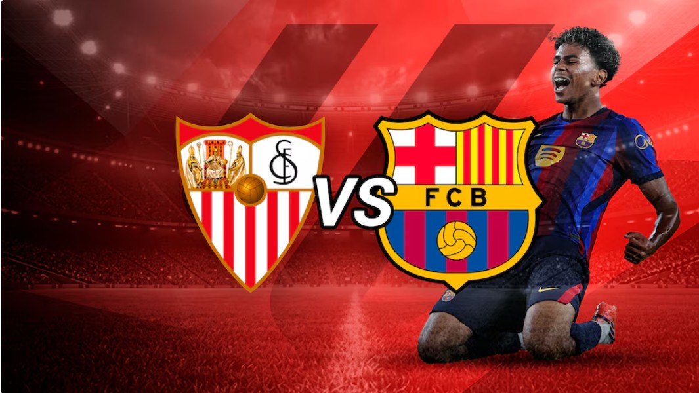

⚽ LA LIGA
Barcelona visita al Sevilla por LaLiga
El FC Barcelona se enfrenta al Sevilla en la jornada 7 de LaLiga 2026/27. El conjunto azulgrana llega invicto y busca mantener su buen comienzo de temporada.
Leer noticia →